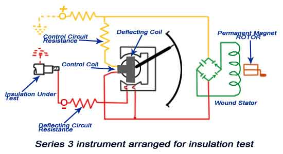
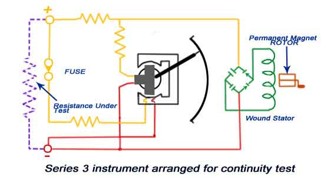

What is Megger?
• Uses
• Types
Electronic Type Megger
• Advantages
• Disadvantages
Hand Operated Megger
• Advantages
• Disadvantages
Construction of Megger
• Working Principle
• Connection Diagram for Testing
History of Megger
The device is being used since 1889, popularity raised during 1920s, since long back devise is same in its uses & purpose of testing, few real improvement appeared in recent years with its design & quality of tester. Now high quality option are available which are easy to use and quite safe.
What is Megger?
Insulation resistance quality of an electrical system degrades with time, environment condition i.e. temperature, humidity, moisture & dust particles. It also get impacted negatively due to the presence of electrical & mechanical stress, so it’s become very necessary to check the IR (Insulation resistance) of equipment at a constant regular interval to avoid any measure fatal or electrical shock.
Electronics Megger
Uses of Megger
The device enable us to measure electrical leakage in wire, results are very reliable as we shall be passing electric current through device while we are testing. The equipment basically use for verifying the electrical insulation level of any device such as motor, cable, generator winding, etc. This is a very poplar test being carried out since very long back. Not necessary it shows us exact area of electrical puncture but shows the amount of leakage electric current & level of moisture within electrical equipment/winding/system.
Types of Megger
This can be separated into mainly two categories:-
1. Electronic Type ( Battery Operated)
2. Manual Type (Hand Operated)
But there are another types of megger which is motor operated type which does not use battery to produce voltage it requires external source to rotate a electrical motor which in turn rotates the generator of the megger
Electronic Megger
Electronic Type Megger
Important parts:-
1. Digital Display :- A digital display to show IR value in digital form.
2. Wire leads :- Two nos of wire leads for connecting megger with electrical external system to be tested.
3. Selection switches :- Switches use to select electrical parameters ranges.
4. Indicators :- To indicates various parameters status i.e. On-Off. For Example Power, hold, Warning, etc.
Note: - Above construction is not similar for every megger, it difference appears manufacture to manufacture but basic construction & operation are same for all.
Advantages of Electronic Type Megger
• Level of accuracy is very high.
• IR value is digital type, easy to read.
• One person can operate very easily.
• Works perfectly even at very congested space.
• Very handy & safe to use.
Disadvantages of Electronic Type Megger
• Require an external source of energy to energies i.e. Dry cell.
• Costlier in market.
Hand Operated Megger
Hand Operated Megger
Important parts:-
Analog display: - Analog display provided on front face of tester for IR value recording.
Hand Crank:- Hand crank used to rotate helps to achieve desired RPM required generate voltage which runs through electrical system.
Wire Leads :- Used same as in electronic tester i.e. For connecting tester with electrical system.
Advantages of Hand Operated Megger
1. Still keeps important in such high-tech world as it’s an oldest method for IR value determination.
2. No external source required to operate.
3. Cheaper available in market.
Disadvantages of Hand Operated Megger
1. At least 2 person required to operate i.e. one for rotation of crank other to connect megger with electrical system to be tested.
2. Accuracy is not up to the level as it’s varies with rotation of crank.
3. Require very stable placement for operation which is a little hard to find at working sites.
4. Unstable placement of tester may impact the result of tester.
5. Provides an analog display result.
6. Require very high care & safety during use of the same.
Construction of Megger
Circuit Construction features :-
Megger Construction
1) Deflecting & Control coil : Connected parallel to the generator, mounted at right angle to each other and maintain polarities in such a way to produced torque in opposite direction.
2) Permanent Magnets: Produce magnetic field to deflect pointer with North-South pole magnet.
3) Pointer : One end of the pointer connected with coil another end deflects on scale from infinity to zero.
4) Scale : A scale is provided in front-top of the megger from range ‘zero’ to ‘infinity’, enable us to read the value.
5) D.C generator or Battery connection : Testing voltage is produced by hand operated D.C generator for manual operated Megger. Battery / electronic voltage charger is provided for automatic type Megger for same purpose.
6) Pressure coil resistance and Current coil resistance : Protect instrument from any damage because of low external electrical resistance under test.
Working Principle of Megger
• Voltage for testing produced by hand operated megger by rotation of crank in case of hand operated type, a battery is used for electronic tester.
• 500 Volt DC is sufficient for performing test on equipment range up to 440 Volts.
• 1000V to 5000V is used for testing for high voltage electrical systems.
• Deflecting coil or electric current coil connected in series and allows flowing the electric current taken by the circuit being tested.
• The control coil also known as pressure coil is connected across the circuit.
• Current limiting resistor (CCR & PCR ) connected in series with control & deflecting coil to protect damage in case of very low resistance in external circuit.
• In hand operated megger electromagnetic induction effect is used to produce the test voltage i.e. armature arranges to move in permanent magnetic field or vice versa.
• Where as in electronic type megger battery are used to produce the testing voltage.
• As the voltage increases in external circuit the deflection of pointer increases and deflection of pointer decreases with a increases of current.
• Hence, resultant torque is directly proportional to voltage & inversely proportional to current.
• When electrical circuit being tested is open, torque due to voltage coil will be maximum & pointer shows ‘infinity’ means no shorting throughout the circuit and has maximum resistance within the circuit under test.
• If there is short circuit pointer shows ‘zero’, which means ‘NO’ resistance within circuit being tested.
Work philosophy based on ohm-meter or ratio-meter. The deflection torque is produced with megger tester due to the magnetic field produced by voltage & current, similarly like ‘Ohm's Law’
Torque of the megger varies in ration with V/I, (Ohm's Law :- V=IR or R=V/I). Electrical resistance to be measured is connected across the generator & in series with deflecting coil.
Produced torque shall be in opposite direction if electric current supplied to the coil.
1. High resistance = No electric current :- No electric current shall flow through deflecting coil, if resistance is very high i.e. infinity position of pointer
2. Small resistance = High electric current :- If circuit measures small resistance allows a high electric current to pass through deflecting coil, i.e. produced torque make the pointer to set at ‘ZERO’.
3. Intermediate resistance = varied electric current :- If measured resistance is intermediate, produced torque align or set the pointer between the range of ‘ZERO to INIFINITY’
Connection Diagram of Megger for Testing

ry-uses-of-megger
 by
by